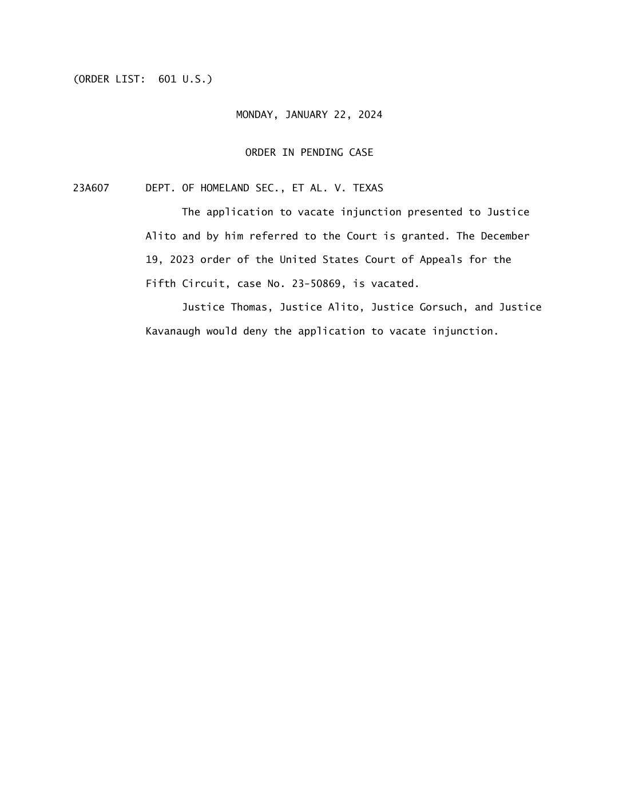
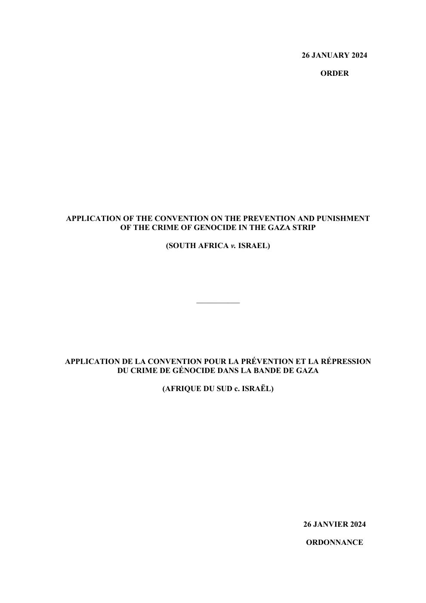
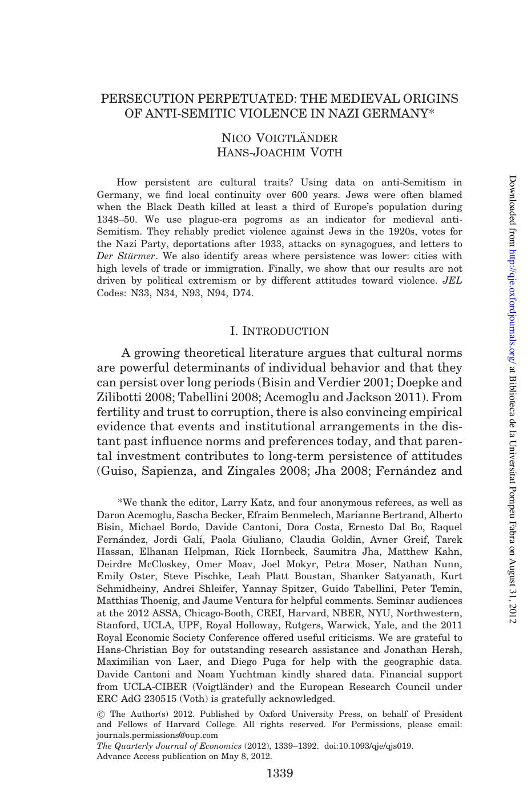

1:16:10 · 5 OPERE
Israel as a model of civil society.
Il filo del discorso
La conversazione in inglese presenta lo scrittore Chaim Noll, residente nel deserto del Negev, e propone Israele come esempio di una società capace di mantenere discussione pubblica e pluralismo anche durante la guerra. Il conduttore apre interrogandolo sulla distanza fra la sua esperienza quotidiana e la rappresentazione mediatica occidentale. Noll risponde a partire dal trauma del 7 ottobre 2023: ritiene che molti israeliani attribuiscano ormai minore importanza ai giudizi esterni e chiedano di impedire a Hamas nuovi attacchi.
Leggi la sintesi completaRiduci la sintesi
Sono valutazioni dell’ospite, senza un sondaggio identificato che autorizzi a parlare per ogni cittadino. La prima parte intreccia guerra, informazione e responsabilità politica. Noll racconta le esperienze dei nipoti impegnati nell’esercito e sostiene che la collaborazione con Hamas sia molto diffusa a Gaza. La scheda non trasforma questo giudizio in una colpa della popolazione: l’appartenenza a una comunità o il sostegno politico non eliminano la protezione dei civili, che richiede distinzioni individuali secondo il diritto umanitario. Anche le accuse all’UNRWA restano separate dalle indagini su singoli dipendenti e dalla funzione umanitaria dell’agenzia. I due interlocutori discutono inoltre finanziamenti, università e media; le ipotesi di influenza occulta non sono dimostrate dal semplice accostamento di eventi. Un passaggio delicato riguarda il ritardo della risposta militare il 7 ottobre. Noll ipotizza che vi sia stato un condizionamento statunitense, ma non presenta documenti che provino questa ricostruzione. Il confronto prosegue sulle relazioni militari fra Israele e Stati Uniti, sulla crisi di Suez, sul rapporto fra Cina e Iran e sugli equilibri regionali. In questi passaggi il racconto unisce ricordi, interpretazioni strategiche e previsioni: la loro attribuzione ai parlanti è essenziale per non confonderli con fatti accertati. Il nucleo più personale riguarda il senso di appartenenza dei giovani. Noll, che ricorda la propria educazione tedesca e la diffidenza verso il patriottismo, si dice sorpreso dalla disponibilità dei nipoti a difendere gli amici e il paese. Riferisce anche il dissenso della moglie, mostrando che la stessa famiglia non è una voce unica. Il modello di società civile che propone associa libertà di discussione, responsabilità e difesa; non coincide automaticamente con l’approvazione di ogni scelta del governo o con un giudizio sulla legalità di qualsiasi azione militare. Nella seconda metà il confronto si sposta sulle difficoltà dell’Europa, sull’antisemitismo e sulle risposte elettorali. Le generalizzazioni dell’ospite sui musulmani restano riconoscibili come sue posizioni, senza attribuire un progetto politico o responsabilità collettive a una religione. Il conduttore richiama uno studio di Voigtländer e Voth sulla persistenza locale dell’antisemitismo: un risultato storico e aggregato, non una legge immutabile dei popoli. Una controversia di frontiera in Texas e il ricorso sudafricano alla Corte internazionale di giustizia offrono altri esempi del loro dissenso verso le istituzioni. Il finale passa da scenari cupi alla speranza di un cambiamento europeo, con un richiamo generale a Vico e all’alternanza fra crisi e ripresa.
I libri nel discorso

Holding Campus Leaders Accountable and Confronting Antisemitism
Identificazione probabile
Note sul riferimento
Frontespizio del verbale · audizione 5 dicembre 2023, stampa GPO 2024: Frontespizio del verbale ufficiale dell’audizione Holding Campus Leaders Accountable and Confronting Antisemitism, 5 dicembre 2023, seriale 118-31. Edizione GPO, Washington, 2024, prima pagina del PDF CHRG-118hhrg56239.
Data dell’audizione 5 dicembre 2023 distinta dall’anno della stampa 2024. Immagine dell’intera prima pagina, non del documentario, di un’audizione CUNY o di altro fascicolo.
Nel dialogo a1058,99s si richiamano le tre donne e le loro risposte al Congresso; il contesto ritorna a2113,06s e2231,70s con la formula dipende dal contesto. Il titolo e il giorno dell’audizione non sono pronunciati.

Department of Homeland Security et al. v. Texas, No. 23A607 — Order of January 22, 2024
Identificazione probabile
Note sul riferimento
Copertina: Facsimile completo dell’unica pagina dell’Order in Pending Case 23A607, Supreme Court of the United States, 22 gennaio 2024. Documento giudiziario, non copertina di libro.
Pagina originale del documento identificato; nessuna edizione materialmente mostrata nel video è stata confermata.
Riferimento ricavato dalla trascrizione automatica.

Corano
Note sul riferimento
Copertina: BUR Classici, edizione aggiornata
Edizione con introduzione, traduzione e commento di Alessandro Bausani, a cura di Layla Mustapha Ammar. Anno della ristampa non dedotto dalla copertina; nessuna edizione attribuita al video.
Riferimento ricavato dalla trascrizione automatica.

Application of the Genocide Convention in the Gaza Strip (South Africa v. Israel) — Order of 26 January 2024
Identificazione probabile
Note sul riferimento
Copertina: Frontespizio originale bilingue dell’ordinanza CIG del 26 gennaio 2024, copia integrale di 29 pagine ospitata dal Ministero della giustizia sudafricano. Frontespizio di un atto giudiziario, non di un libro.
Pagina originale del documento identificato; nessuna edizione materialmente mostrata nel video è stata confermata.
Riferimento ricavato dalla trascrizione automatica.

Persecution Perpetuated: The Medieval Origins of Anti-Semitic Violence in Nazi Germany
Identificazione probabile
Note sul riferimento
Copertina: Pagina iniziale originale dell’articolo pubblicato, The Quarterly Journal of Economics 127(3), 2012, p. 1339, copia presso CREI. Pagina di rivista con titolo, autori e abstract, non copertina di un volume.
Pagina originale del documento identificato; nessuna edizione materialmente mostrata nel video è stata confermata.
Riferimento ricavato dalla trascrizione automatica.